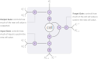
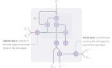
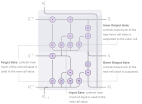

Exploration of Recurrent Units in RNN
An exploration of recent developments of recurrent units in RNN and their
effect on contextual understanding in text.
User types input sequence.
Recurrent neural network processes the sequence.
The output for the last character is used.
The most likely suggestions are extracted.
The indices are looked up in a dictionary.
Autocomplete: An example application, showing how a simple
recurrent neural network can be used for autocompletion. The network uses
past information and understands the next word should be a country. Try
removing the last letters
and see that the prediction uses contextual understanding
(reset).
Introduction
Recent advances in handwriting recognition, speech recognition
, and machine translation
have with only a few
exceptions
been based on
recurrent neural networks.
These networks may use additional techniques such as attention mechanisms
to work with an unknown
alignment between the source and the target sequence.
However, the foundation for these networks is still the recurrent neural
network. Likewise, a common challenge for many of these applications
is to get the network to memorize past content from the input sequences
and use this for contextual understanding later in the sequence.
This memorization problem is what is explored in this article. To this end,
this article doesn't go into the details of how to deal with an unknown
alignment but rather focuses on problems where the alignment is known
and explores the memorization issue for those problems.
Recurrent Units
Recurrent neural networks (RNNs) are well known and
thoroughly explained in literature. To keep it short, recurrent
neural networks allows one to model a sequence of vectors. RNNs do this
by iterating over the sequence, where each layer uses the output from
the same layer in the previous "time" iteration, combined with the output
from the previous layer in the same "time" iteration.
In theory, this type of network allows it in each iteration to know
about every part of the sequence that came before.
Given an input sequence ,
such model can be expressed using the following set of equations:
Note how the output from the previous iteration (
) and the output from the previous layer in the same iteration (
) are combined, is abstracted away.
For a vanilla recurrent neural network, the recurrent unit
is:
Vanishing Gradient Problem
Deep neural networks can suffer from a vanishing gradient problem where
the gradient used in optimization becomes minuscule. This is because the
used in backpropagation
ends up being multiplicatively depending on the
of the next layer.
This problem can be mitigated through careful initialization of the weights
, by choosing an
activation function
such as the Rectified Linear Unit (ReLU), or adding residual connections
.
In classic recurrent neural networks, this problem becomes much worse,
due to the time dependencies as the time dependencies essentially unfold
into a potentially infinite deep neural network.
An intutive way of viewing this problem is that the vanilla recurrent
network forces an update of the state . This forced update, is what courses the vanishing
gradient problem.
This forced update is also insufficient as irrelevant input data, such as
skip words, blur out important information from previous iterations.
Long Short-Term Memory

LSTM: (Long Short-Term Memory) allows for long-term
memorization by gateing its update, thereby solving the vanishing gradient
problem.
The Long Short-Term Memory (LSTM) unit replaces the simple
unit from earlier. Each LSTM
unit contains a single memory scalar that can be protected or written to,
depending on the input and forget gate. This structure has shown to be
very powerful in solving complex sequential problems
. LSTM is well known and
thoroughly explained in the literature and therefore not discussed here.
However as it plays a critical part in the Nested LSTM unit, that is
discussed later, its equations are mentioned here.
The gate activation functions are usually the simoid activation function.
While are usually .
Gated Recurrent Unit

GRU: (Gated Recurrent Unit) also solves the vanishing
gradient problem but does so without depending on an internal memory state.
The Gated Recurrent Unit (GRU) is a more recent advancement, as it was
developed in 2014 . Like the LSTM Unit,
it also solves the vanishing gradient problem. It is therefore similar to
the LSTM Unit, however where the LSTM uses an internal memory state to
control if the output equally its previous state, the GRU units
controls this directly.
The gate activation functions are usually the simoid activation function,
and is usually
.
Nested LSTM

Nested LSTM: makes the cell update depend on another
LSTM unit, supposedly this allows more long-term memory compared to
stacking LSTM layers.
Even though the LSTM unit and GRU solves the vanishing gradient problem on a
theoretical level, long-term memorization continues to be a challenge in
recurrent neural networks.
The Nested LSTM unit attemps to solve the long-term memorization from a
more practical point of view. Where the classic LSTM unit solves the
vanishing gradient problem by adding internal memory, and the GRU attemps
to be a faster solution than LSTM by using no internal memory, the Nested
LSTM goes in the opposite direction of GRU by adding additional memory to
the unit .
The idea here is that adding additional memory to the unit allows for more
long-term memorization.
The additional memory is integrated by changing how the cell value
is updated. Instead of
defining the cell value update as , it uses another LSTM unit:
Note that the variables defined in
are different
from those defined below. The end result is that an
unit
have two memory states.
The complete set of equations then becomes:
Like in vanilla LSTM, the gate activation functions are usually the simoid activation function. However,
only the is set to
. While,
is just the identity
function, otherwise two non-linear activation functions would be applied
on the same scalar without any change, except for the multiplication by
the input gate. The activation functions for remains the same.
The abstraction, of how to combine the input with the cell value, allows
a lot of flexibility. Using this abstraction, it is not only possible
to add one extra internal memory state but the internal
unit can
recursively be replaced as many internal
units as
one would wish, thereby adding even more internal memory.
From a theoretical view, whether or not the Nested LSTM unit improves long-term
memorization is not really clear. The LSTM unit theoretically solves the vanishing
gradient problem and a network of LSTM units is Turing complete. In theory,
using LSTM units should be sufficient for solving problems that require
long-term memorization.
That being said, it is often very difficult to train LSTM and GRU based
recurrent neural networks. These difficulties often come down to the
curvature of the loss function and it is possible that the Nested LSTM
improves this curvature and therefore is easier to optimize.
Comparing Recurrent Units
Comparing the different Recurrent Units is not a trivial task. Different
problem requires different contextual understanding and therefore requires
different memorization.
A good problem for analyzing the contextual understanding, should have
a humanly interpretive output and depend both on long and short memorization.
To this end, the autocomplete problem is used. Each character is mapped
to a target that represents the entire word. To make it extra difficult,
the space leading up to the word should also map to that word.
The autocomplete problem is not a standard problem, thus the text8 problem,
where each character will predict the next character, is also used. This
is a very similar problem to the autocomplete problem but it is not as
easy to interpret how meaningful the output is.
Autocomplete Problem
The input vocabulary is a-z, space, and a padding symbol. The output
vocabulary consists of the
most frequent words, and two additional symbols, one for padding and one
for unknown words. The network is not penalized for predicting padding
and unknown words wrong.
The dataset is the full
text8 dataset, where
each observation consists of maximum 200 characters and is ensured to
not contain partial words. 90% of the observations are used for training,
5% for validation and 5% for testing.
The GRU, LSTM each have 2 layers of 600 units. Similarly, the Nested LSTM
model has 1 layer of 600 units but with 2 internal memory states.
Additionally, each model has an input embedding layer and a final dense
layer to match the vocabulary size.
| Model | Units | Layers | Depth | Parameters |
|---|
| | | | Embedding | Recurrent | Dense |
|---|
| GRU | 600 | 2 | N/A | 16200 | 4323600 | 9847986 |
| LSTM | 600 | 2 | N/A | 16200 | 5764800 | 9847986 |
| Nested LSTM | 600 | 1 | 2 | 16200 | 5764800 | 9847986 |
Model Configurations: shows the number of layers, units and parameters
for each model.
There are 508583 sequences in the training dataset and a batch size
of 64 observations is used. A single iteration over the entire dataset
then corresponds to 7946 epochs, which is enogth to train the network,
therefore the models only trained for 7946 epochs. For training, Adam
optimization is used with default parameters.
Model training: shows the training loss and
validation loss for the GRU, LSTM, and Nested LSTM models when training
on the autocomplete problem.
| Model | Cross Entropy | Accuracy |
|---|
| GRU | 2.1497 | 51.61% |
| LSTM | 2.2899 | 49.90% |
| Nested LSTM | 2.6051 | 45.47% |
Model testing: shows the testing loss and accuracy
for the GRU, LSTM, and Nested LSTM models on the autocomplete problem.
As seen from the results the models are more or less equally fast.
Surprisingly the Nested LSTM is not better than the LSTM or GRU models.
This somewhat contradicts the results found in the Nested LSTM paper
, although they tested model
on different problems and therefore the results are not exactly comparable.
Never or less one would still expect the Nested LSTM model to perform
better for this problem, where long-term memorization is important for
the contextual understanding.
An unexpected result is that the Nested LSTM model initially
converges much faster than the LSTM and GRU models. This, combined with
the worse performance, indicates that the Nested LSTM optimizes forwards
an unideal local minimum.
Connectivity in the Autocomplete Problem
To get a better idea of how well each model memorizes and uses that for
contextual understanding, the connectivity between the desired output and
the input should be analyzed. This is calculated as the magnitude of
the gradient, between the logits for the desired output
and the input
.
Connectivity: shows the connection strength between
the target for the selected character and the input characters
(reset).
Exploring the connectivity gives a surprising amount of insight into the
different models ability for long-term contextual understanding. You should
try and interact with the figure yourself, to see what information the
different models use.
Here are two interesting observations:
-
The first observation, is when the
models should predict "learning" and is only given data
until the first character. Here it is clear, that the Nested LSTM
model uses no past information and thus only suggests common words starting
with the letter "l".
The LSTM model suggests variations on the word "language",
which makes sense given the text is about learning grammar. The GRU model
does one better, by using the words "study" and "education" to also suggests
the correct word "learning".
-
The second observation, is when the models should predict the word "grammar".
This word appears twice, for the first case very little is known
about the context. Thus, the models don't suggest "grammar" until they have
seen 3 or
4 characters.
For the second occurrence, there is much more text for the models to
understand the context of the word. The GRU model is thus able to predict
the word "grammar" with only
1 character from the word itself. While the LSTM and Nested LSTM again
needs 4 characters.
These observations suggest that the Nested LSTM model, in particular,
doesn't use long-term memorization as one would otherwise expect from the
additional memory states.
Text8 Generation Problem
The Text8 generation problem is a more commonly used problem. From the
text8 dataset, each
character should predict the next character. The dataset is created
similarly to the autocomplete dataset. No partial words are allowed,
90% for training data, 5% for validation, 5% for testing. The only difference
is that the max length is 180 characters, which is to match previous
word .
The models are also identical, except 1200 units are used. Again, this is
to match previous work .
| Model | Units | Layers | Depth | Parameters |
|---|
| | | | Embedding | Recurrent | Dense |
|---|
| GRU | 1200 | 2 | N/A | 33600 | 17287200 | 34829 |
| LSTM | 1200 | 2 | N/A | 33600 | 23049600 | 34829 |
| Nested LSTM | 1200 | 1 | 2 | 33600 | 23049600 | 34829 |
Model Configurations: shows the number of layers, units,
and parameters for each model.
As there are 508583 sequences in the training dataset, the models only
train over the dataset once, which is 7946 epochs. For training, Adam
optimization is used with default parameters. Unlike previous work,
gradient clipping isn't used as it didn't appear to provide any benefit.
Model training: shows the training loss and
validation loss for the GRU, LSTM, and Nested LSTM models when training
on the text8 generation problem.
| Model | Cross Entropy | Accuracy |
|---|
| GRU | 1.1212 | 64.80% |
| LSTM | 1.0680 | 66.35% |
| Nested LSTM | 1.1135 | 64.79% |
Model testing: shows the testing loss and accuracy
for the GRU, LSTM, and Nested LSTM models on the text8 generation problem.
The results show that the models are more or less equivalent, with the
LSTM model performing only marginally better than the GRU, and Nested LSTM
models. It was thus not possible to replicate the results form the original
Nested LSTM article .
Conclusion
Looking at accuracy and cross entropy loss in itself is not that
interesting. A reasonable high accuracy can be obtained, with reasonably
low contextual understanding. It is only for the first couple of characters,
that long-term memorization and contextual understanding really matters.
A more qualitative analysis of the connectivity together with the prediction,
reveals that the Nested LSTM model isn't capable of long-term contextual
understanding. This contradicts the design decisions for the model and the
findings in the original paper .
In fact, the GRU model, which has no internal memory, is the model that
has the highest accuracy and shows the most contextual understanding in the
connectivity analysis.
It is entirely possible, that the results are highly dependent on the
random initialization and the specific problem. However, the results still
show that more internal memory per recurrent unit does not necessarily
improve long-term memorization.
Acknowledgments
Many thanks to the authors of the original Nested LSTM paper
, Joel Ruben, Antony Moniz,
and David Krueger. Even though our findings weren't the same, they
have inspired much of this article and shown that something as used
as the recurrent unit is still an open research area.